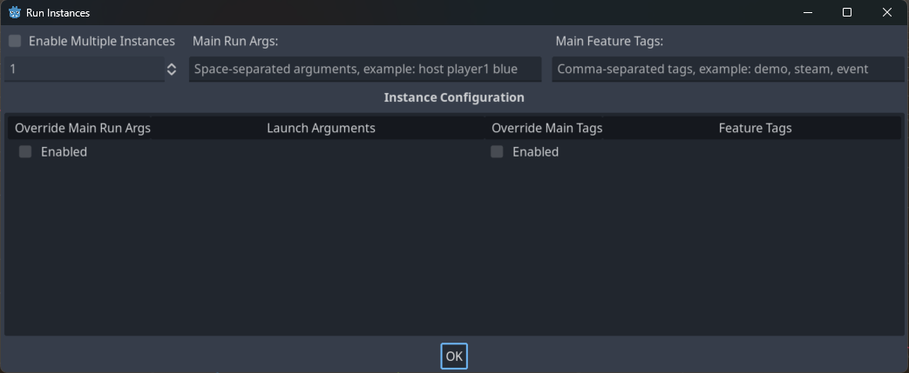
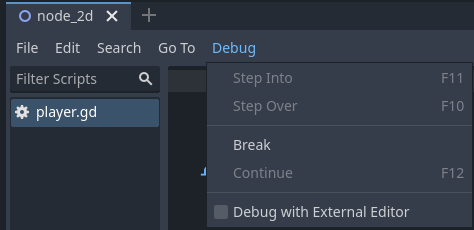
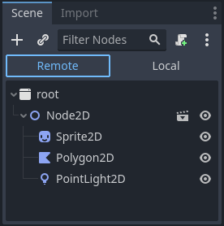

Overview of debugging tools
This guide will give you an overview of the available debugging tools in the engine.
Godot comes with a powerful debugger and profilers to track down bugs, inspect your game at runtime, monitor essential metrics, and measure performances. It also offers options to visualize collision boxes and navigation polygons in the running game.
Finally, you have options to debug the game running on a remote device and to reload changes to your scenes or your code while the game is running.
Output Panel
The output panel allows you to see text printed by the project, but also by the editor (e.g. from @tool scripts).
You can find information about in Output panel.
Debugger Panel
Many of Godot's debugging tools are part of the Debugger panel, which you can find information about in Debugger panel.
Debug menu options
There are a few common debug options you can toggle on or off when running your game in the editor, which can help you in debugging your game.
You can find these options in the Debug editor menu.

Here are the descriptions of the options:
Deploy with Remote Debug
When this option is enabled, using one-click deploy will make the executable attempt to connect to this computer's IP so the running project can be debugged. This option is intended to be used for remote debugging (typically with a mobile device). You don't need to enable it to use the GDScript debugger locally.
Small Deploy with Network Filesystem
This option speeds up testing for games with a large footprint on remote devices.
When Small Deploy with Network Filesystem is on, instead of exporting the full game, deploying the game builds a minimal executable. The editor then provides files from the project over the network.
Also, on Android, the game is deployed using the USB cable to speed up deployment.
Visible Collision Shapes
When this option is enabled, collision shapes and raycast nodes (for 2D and 3D) will be visible in the running project.
Visible Paths
When this option is enabled, curve resources used by path nodes will be visible in the running project.
Visible Avoidance
When this option is enabled, avoidance object shapes, radiuses, and velocities will be visible in the running project.
Debug CanvasItem Redraws
When this option is enabled, redraw requests of 2D objects will become visible (as a short flash) in the running project. This is useful to troubleshoot low processor mode.
Synchronize Scene Changes
When this option is enabled, any changes made to the scene in the editor will be replicated in the running project. When used remotely on a device, this is more efficient when the network filesystem option is enabled.
Synchronize Script Changes
When this option is enabled, any changes made to the script in the editor will be reloaded in the running project. When used remotely on a device, this is more efficient with the network filesystem.
Keep Debug Server Open
When this option is enabled, the editor debug server will stay open and listen for new sessions started outside of the editor itself.
Customize Run Instances...
This opens a dialog allowing you to tell Godot to run multiple instances of the game at once, and to specify the command line arguments for each instance. This is especially useful when building and debugging multiplayer games.

Enable Multiple Instances
When this option is enabled, the editor will run multiple instances of the project at once when you Run Project.
Below this checkbox is a selector to pick how many instances to run.
Checking the box and setting this to only 1 is the same as not checking this box at all.
Main Run Args
These are the arguments that will be passed to every instance of the project when you Run Project, unless you select "Enabled" under "Override Main Run Args" for a specific instance.
Note that these arguments are space-separated.
Tip
These arguments can be accessed in your script by using get_cmdline_args.
Warning
Even if you uncheck "Enable Multiple Instances" these arguments will be passed when you Run Project.
Override Main Run Args
When this is enabled, the arguments in the "Main Run Args" field will not be passed to this specific instance of the project when you Run Project.
Launch Arguments
These are the arguments that will be passed to this specific instance of the project when you Run Project. They will be combined with the "Main Run Args" unless you select "Enabled" under "Override Main Run Args".
Script editor debug tools and options
The script editor has its own set of debug tools for use with breakpoints and two options. The breakpoint tools can also be found in the Debugger tab of the debugger.
Tip
You can create a breakpoint by clicking the gutter in the left of the script editor (on the left of the line numbers). When hovering this gutter, you will see a transparent red dot appearing, which turns into an opaque red dot after the breakpoint is placed by clicking. Click the red dot again to remove the breakpoint. Breakpoints created this way persist across editor restarts, even if the script wasn't saved when exiting the editor.
You can also use the breakpoint keyword in GDScript to create a
breakpoint that is stored in the script itself. Unlike breakpoints created by
clicking in the gutter, this keyword-based breakpoint is persistent across
different machines when using version control.

The Break button causes a break in the script like a breakpoint would. Continue makes the game continue after pausing at a breakpoint. Step Over goes to the next line of code, and Step Into goes into a function if possible. Otherwise, it does the same thing as Step Over.
The Debug with External Editor option lets you debug your game with an external editor. You can set a shortcut for it in Editor Settings > Shortcuts > Debugger.
When the debugger breaks on a breakpoint, a green triangle arrow is visible in the script editor's gutter. This arrow indicates the line of code the debugger broke on.
Debug project settings
In the project settings, there is a Debug category with subcategories which control different things. Enable Advanced Settings to change these settings.
Settings
These are some general settings such as printing the current FPS to the Output panel, the maximum amount of functions when profiling and others.
File Logging
These settings allow you to log console output and error messages to files.
GDScript
These settings allow you to toggle specific GDScript warnings, such as for unused variables. You can also turn off warnings completely. See GDScript warning system for more information.
Shader Language
These settings allow you to toggle specific shader warnings, such as for unused variables. You can also turn off warnings completely.
Canvas Items
These settings are for canvas item redraw debugging.
Shapes
Shapes are where you can adjust the color of shapes that only appear for debugging purposes, such as collision and navigation shapes.
Remote in scene dock
When running a game in the editor two options appear at the top of the Scene dock, Remote and Local. While using Remote you can inspect or change the nodes' parameters in the running project.

Note
Some editor settings related to debugging can be found inside the Editor Settings, under the Network > Debug and Debugger sections.